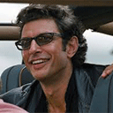
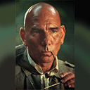
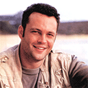
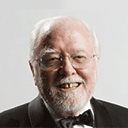

Steven Spielberg
Director
Born on December 18, 1946, in Cincinnati, Ohio, Steven Speilberg was an amateur filmaker as a child. He went on to become the enormously successful and Academy Award-winning director of such films as Schindler's List, The Color Purple, E.T.: The Extra-Terrestrial and Saving Private Ryan. In 1994, he co-founded the studio Dreamworks SKG, which was purchased by Paramount Pictures in 2005.

Jeff Goldblum
Actor
Born on October 22, 1952, in Pittsburgh, Pennsylvania, Jeff Goldblum studied acting with Stanford Meisner in New York before embarking on a big-screen career. He's starred in several dozen films, with prominent roles in works like The Fly, Jurassic Park, Independence Day and Morning Glory. Goldblum is also a noted actor of stage and television, having been part of the cast of Law & Order: Criminal Intent.
Julianne Moore
Actress
Julianne Moore was born in Fayetteville, North Carolina, on December 3, 1960. She became known for her role on the soap opera As The World Turns. Her feature films include The Hand That Rocks the Cradle, The Fugitive, The Hours and Children of Men. She has twice been nominated for an Academy Award for best actress, for performances in Boogie Nights and Far From Heaven.

Pete Postlethwaite
Actor
Pete Postlethwaite was born in Warrington, Cheshire, England, UK, on February 7, 1946. A drama teacher initially, he decided to follow his acting instints full-time and gradually built up an impressive array of classical stage credits via repertory. By 1993 he had crossed over into Hollywood parts and earned his first Oscar nomination for his superb role as Daniel Day-Lewis' father in In the Name of the Father (1993).

Vince Vaughn
Actor
Vince Vaughn spent seven years in Hollywood before he landed the role of smooth-operating Trent in 1996's Swingers. The role led to another in Steven Spielberg's The Lost World: Jurassic Park. In 2003, he joined Saturday Night Live alum Will Ferrell for the hit sophomoric comedy Old School. Other popular film credits include Wedding Crashers (2005) and Couple's Retreat (2009).

Richard Attenborough
Actor
Born on August 29, 1923, in Cambridge, England, Richard Attenborough went on to pursue an acting career, known for British military dramas and the American POW film The Great Escape. He won several awards in the 1960s and made his film directorial debut with the satirical Oh! What a Lovely War. He eventually went on to direct the masterpiece Gandhi, for which he won Academy Awards for best director and picture.